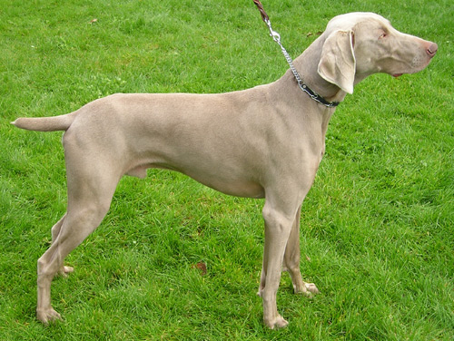

Labradoodle
At their best, Labradoodles are intelligent, friendly, and affectionate. They come in three sizes: miniature (weighing 15 to 30 pounds), medium (30 to 45 pounds), and standard (45 to more than 100 pounds). Because they are a crossbreed their traits are not fixed, so there is no guarantee that the Labradoodle puppy you purchase will fall into the desired weight range
Beagle
Not only is the Beagle an excellent hunting dog and loyal companion, it is also happy-go-lucky, funny, and'thanks to its pleading expression'cute. They were bred to hunt in packs, so they enjoy company and are generally easygoing.
There are two Beagle varieties: those standing under 13 inches at the shoulder, and those between 13 and 15 inches. Both varieties are sturdy, solid, and 'big for their inches,' as dog folks say. They come in such pleasing colors as lemon, red and white, and tricolor. The Beagle's fortune is in his adorable face, with its big brown or hazel eyes set off by long, houndy ears set low on a broad head. A breed described as 'merry' by its fanciers, Beagles are loving and lovable, happy, and companionable'all qualities that make them excellent family dogs. No wonder that for years the Beagle has been the most popular hound dog among American pet owners. These are curious, clever, and energetic hounds who require plenty of playtime.
Weimaraner

The Weimaraner, Germany's sleek and swift 'Gray Ghost,' is beloved by hunters and pet owners alike for their friendliness, obedience, and beauty. They enjoy exercise, and plenty of it, along with lots of quality time with their humans.
Bernard

The Saint Bernard does not rank very high in AKC registrations, but the genial giant of the Swiss Alps is nonetheless among the world's most famous and beloved breeds. Saints are famously watchful and patient 'nanny dogs' for children.
Not ranked particularly high in AKC registrations, this genial giant is nonetheless among the world's most famous and beloved breeds. The Saint's written standard abounds with phrases like 'very powerful,' 'extraordinarily muscular,' 'imposing,' and 'massive.' A male stands a minimum 27.5 inches at the shoulder; females will be smaller and more delicately built. The huge head features a wrinkled brow, a short muzzle, and dark eyes, combining to give Saints the intelligent, friendly expression that was such a welcome sight to stranded Alpine travelers.
Cocker Spaniel
The merry and frolicsome Cocker Spaniel, with his big, dreamy eyes and impish personality, is one of the world's best-loved breeds. They were developed as hunting dogs, but Cockers gained their wide popularity as all-around companions.
Those big, dark eyes; that sweet expression; those long, lush ears that practically demand to be touched'no wonder the Cocker spent years as America's most popular breed. The Cocker is the AKC's smallest sporting spaniel, standing about 14 to 15 inches. The coat comes in enough colors and patterns to please any taste. The well-balanced body is sturdy and solid, and these quick, durable gundogs move with a smooth, easy gait. Cockers are eager playmates for kids and are easily trained as companions and athletes. They are big enough to be sporty, but compact enough to be portable. A Cocker in full coat rewards extra grooming time by being the prettiest dog on the block. These energetic sporting dogs love playtime and brisk walks.